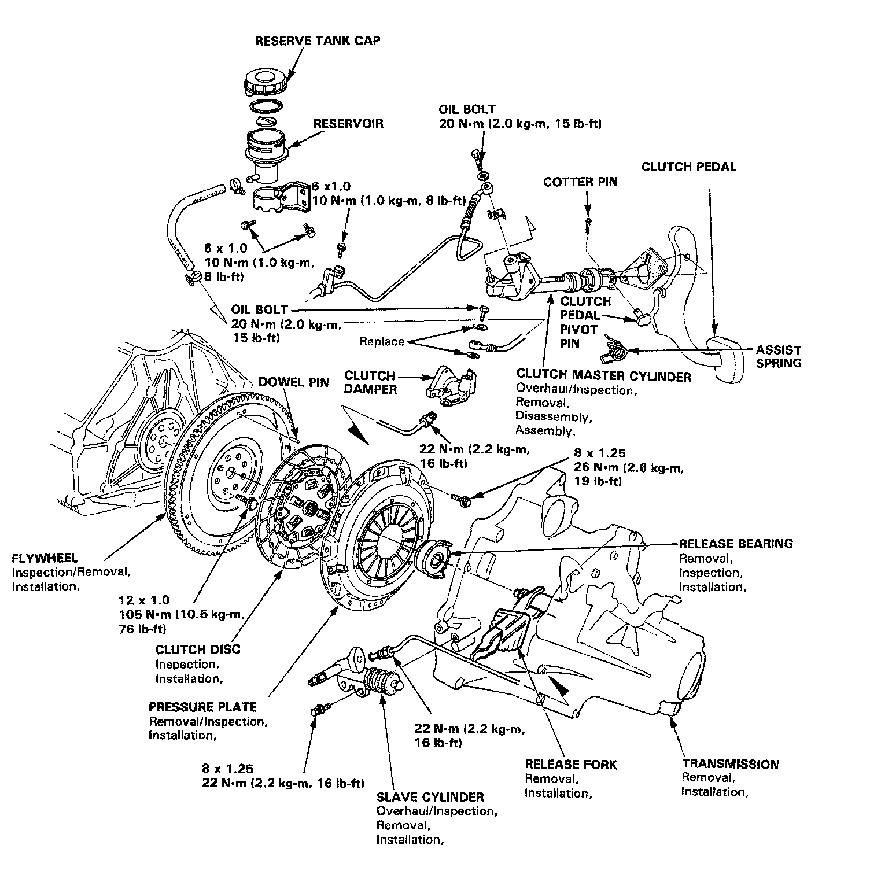
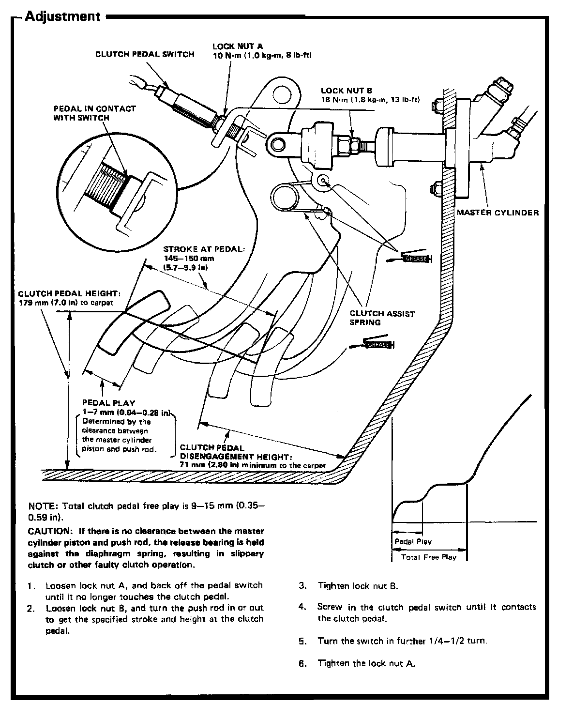
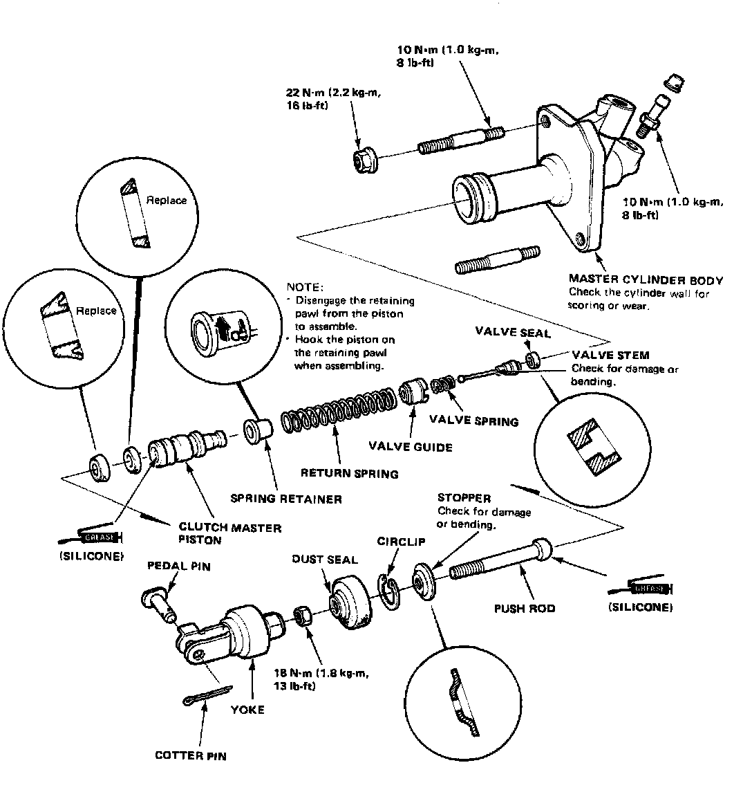
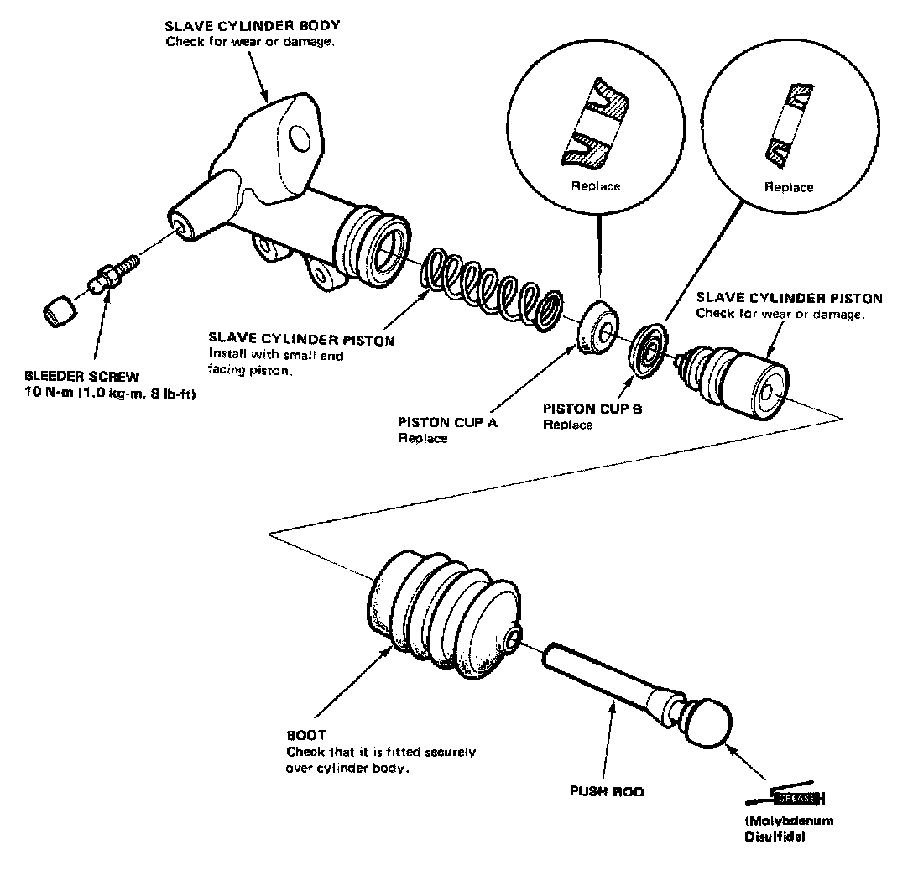
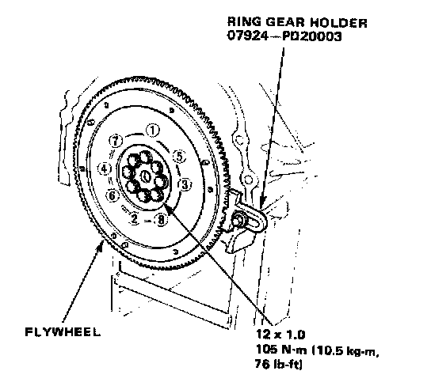
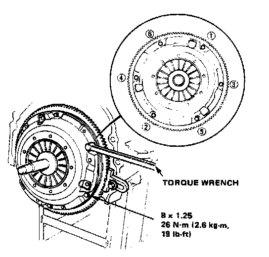
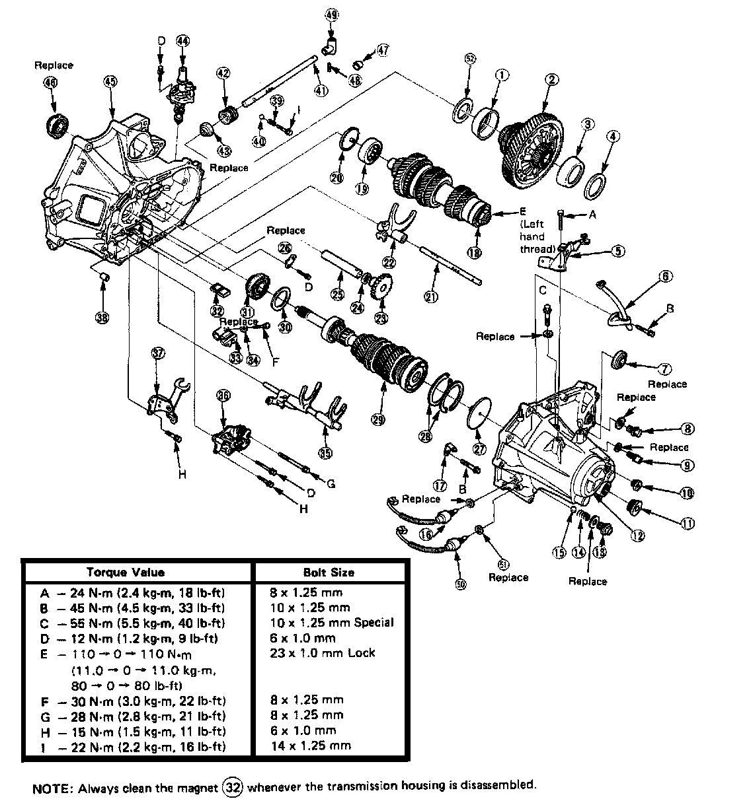
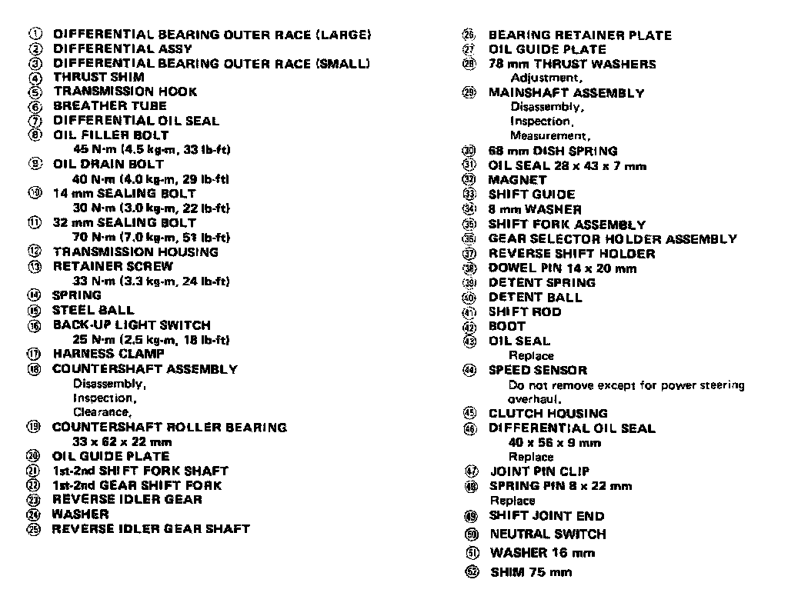
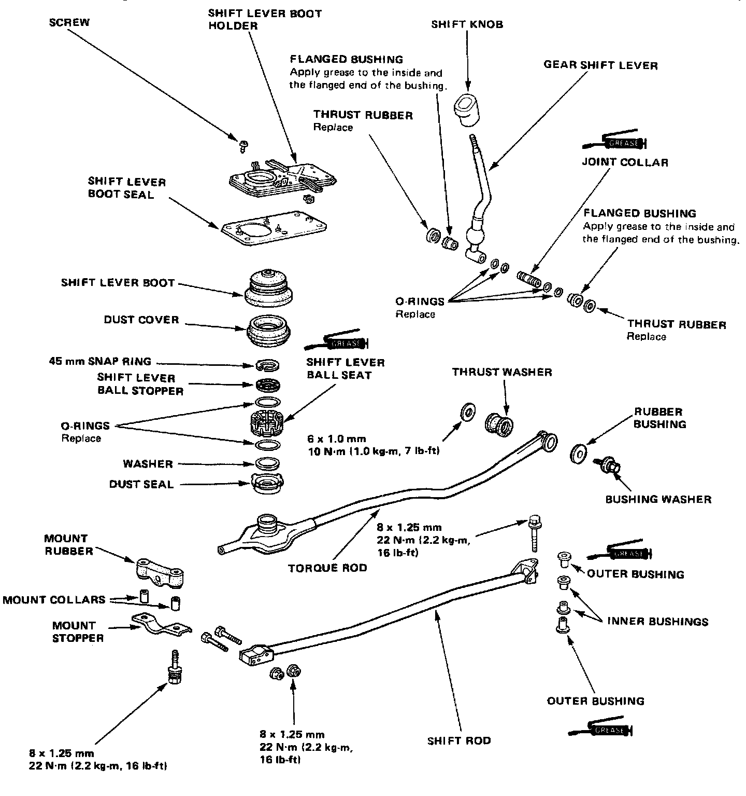

M/T Torque Data
C3F4 5-spd M/T, Clutch Assembly Torque:

C3F4 5-spd M/T, Clutch Pedal Torques:

C3F4 5-spd M/T, Clutch Master Cylinder Torque:

C3F4 5-spd M/T, Slave Cylinder Torque:

C3F4 5-spd M/T, Flywheel Torque & Sequence:

C3F4 5-sapd M/T, Pressure Plate Torque & Sequence:

C3F4 5-spd M/T, Assembly Torque 1 Of 2:

C3F4 5-spd M/T, Assembly Torque Legend:

C3F4 5-spd M/T, Gearshift Mechanism Torque:
